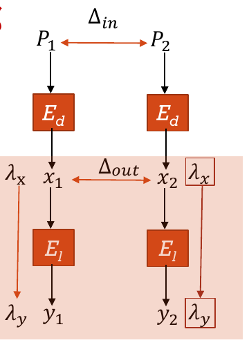

差分—线性分析¶
来源：
密码分析学 / notes/04-线性分析/差分-线性分析.md
核心想法¶
前面已经说过找到一条多轮数高概率的差分路线、线性近似路线都并不容易，但是加密算法往往多个模块，找到短轮数高概率的路线还是比较容易的，这些路线不能浪费，我们适当分割就可以把这些路线拼在一起
 老办法，我们还是对加密算法进行拆分，假设我们知道红色框内的差分路线，蓝色框内的线性近似路线，那么如何拼接呢
老办法，我们还是对加密算法进行拆分，假设我们知道红色框内的差分路线，蓝色框内的线性近似路线，那么如何拼接呢

差分段和线性段怎样连接？¶
把算法分为前段 \(E_d\) 和后段 \(E_l\)。选择一对明文 \((P,P')\)，输入差分为 \(\Delta P=P\oplus P'\)；经过前段后得到 \((X,X')\)，差分记为 \(\Delta X=X\oplus X'\)，经过后段得到 \((Y,Y')\)。
前段需要确定的是 \(\Delta X\) 在后段输入掩码 \(\lambda_x\) 下的奇偶分布：
后段对单个输入 \(X\) 有线性近似，令其错误比特为 \(Z\)：
对同一密钥下的第二条计算写出相同关系，再将两式异或。相同密钥项 \(\theta(K)\) 抵消，得到
如果接口奇偶与两次线性误差按独立模型处理，三项的偏差分别为 \(\varepsilon_d,\varepsilon,\varepsilon\)。堆积引理给出最终偏差
平方来自后段近似对两条状态各使用一次。接口的 \(\varepsilon_d\) 为正时最终偏差为正，为负时最终偏差为负；后段 \(\varepsilon\) 的正负因平方消去。
数值例子： 若接口奇偶为零的概率为 \(3/4\)，则 \(\varepsilon_d=1/4\)；后段单次线性近似的偏差为 \(-1/8\)，则
最终概率比随机基准 \(1/2\) 高 \(1/64\)，便可以积累多组数据观察这种偏离。
Example¶
 比如说我们有这么一个截断差分，第二个S盒全是不确定的，他会扩散到所有S盒的第二个bit，但是吧，第4，6，7bit都是0，那如果我们把输入掩码就选择4，6，7，那么\(\lambda_x(x_1 \oplus x_2)= 0\)是必然的
比如说我们有这么一个截断差分，第二个S盒全是不确定的，他会扩散到所有S盒的第二个bit，但是吧，第4，6，7bit都是0，那如果我们把输入掩码就选择4，6，7，那么\(\lambda_x(x_1 \oplus x_2)= 0\)是必然的
 然后我们再把线性近似式写出来，因为掩码一样嘛，所以偏差也是一样的，然后利用堆积引理，就可以得到最后的概率
然后我们再把线性近似式写出来，因为掩码一样嘛，所以偏差也是一样的，然后利用堆积引理，就可以得到最后的概率
我们这样就把它们拼起来了

截断差分比较厉害的地方就是他可以直接造一个必然事件出来 但是吧，也不一定要截断差分，我们也可以找一些高概率的差分路线，那这概率就不是1了，我们也写成偏差的形式
然后通过堆积引理计算

所以最终偏差的方向由 \(\varepsilon_d\) 决定,我们这边都是假设独立的
还有一个值得注意的地方是，当我们看到一个事情发生的时候，要考虑他的多个原因
比如我们知道一个概率为p的差分路线，那你不能说只要得到最后这个结果，概率就是p吧，他可能有多条路线，比如这里假设其他路线随机置换，

如果这个路线发生了，那概率就是p，如果这个路线没有发生，也就是(1-p)/2,加起来是(1+p)/2
 这是因为这个差分路线的线性近似式得到的是0，我们最后求的概率也是等于0，所以如果他发生概率就是1，如果不发生概率就是1/2，那如果这个差分路线的线性近似式等于1，那发生的时候，概率就是0，不发生的时候，概率就是1/2，这样会求出两个偏差，不过绝对值是一样的
这是因为这个差分路线的线性近似式得到的是0，我们最后求的概率也是等于0，所以如果他发生概率就是1，如果不发生概率就是1/2，那如果这个差分路线的线性近似式等于1，那发生的时候，概率就是0，不发生的时候，概率就是1/2，这样会求出两个偏差，不过绝对值是一样的
 如果线性近似式得到的是1，那就是负的
如果线性近似式得到的是1，那就是负的

把这个值带进去就可以得到一个区分器
 这里我们选择中点作为判定阈值
这里我们选择中点作为判定阈值

 就当中点是交点吧，在左边就判定成cipherfour，在右边就判定为随机置换
假设各明密文对的统计结果近似独立，并将随机置换下的奇偶概率近似为 \(1/2\)，那么：
假设\(H_0\)是随机置换，\(H_1\)是Cipherfour算法
那么服从二项分布
就当中点是交点吧，在左边就判定成cipherfour，在右边就判定为随机置换
假设各明密文对的统计结果近似独立，并将随机置换下的奇偶概率近似为 \(1/2\)，那么：
假设\(H_0\)是随机置换，\(H_1\)是Cipherfour算法
那么服从二项分布
由于 N很大，可以近似为正态分布。
对统计量 \(X=T/N\)，有：
 课件代入其选定的数据量和近似阈值后，得到对应成功率 \(\Phi(1)\)；改变数据量、阈值或偏差后，成功率也会改变。
课件代入其选定的数据量和近似阈值后，得到对应成功率 \(\Phi(1)\)；改变数据量、阈值或偏差后，成功率也会改变。
如何用于攻击¶
- 寻找短轮数的高概率差分或截断差分，以及后段高偏差线性近似。
- 检查连接处：前段输出差分在 \(\lambda_x\) 下的奇偶分布，得到 \(\varepsilon_d\)，并估算或实测整体偏差。
- 收集满足 \(\Delta P\) 的明文对，统计 \(\lambda_y\cdot(C_1\oplus C_2)\) 为 \(0\) 的比例；显著偏离 \(1/2\) 时可区分。
- 要恢复密钥，可再扩展首尾轮，猜测少量子密钥，对部分加解密后的状态重复该统计检验。
在独立样本、固定成功率的估计中，数据量随 \(|\varepsilon_{\mathrm{DL}}|^{-2}\) 增长。
易混点¶
- 差分段输出的是一对状态的差；线性段研究的是单个状态的掩码奇偶值。接口处要先计算 \(\lambda_x\cdot\Delta X\)。
- \(\varepsilon_d\) 是该接口奇偶事件的偏差，需汇总产生相同奇偶值的各条差分路线。
- 两条线性近似的偏差平方来自异或两次近似，计算时保留两次近似的贡献。
来源：第4.6节课件第7—23页。